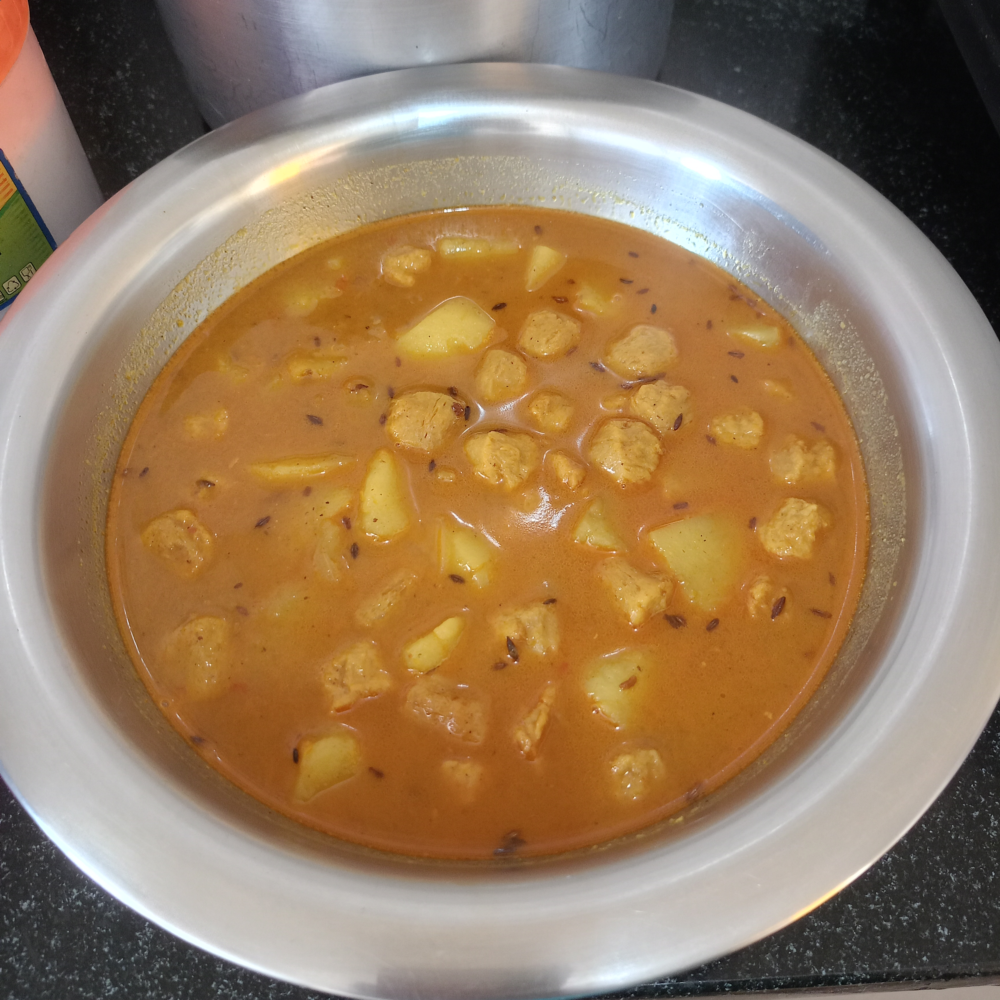
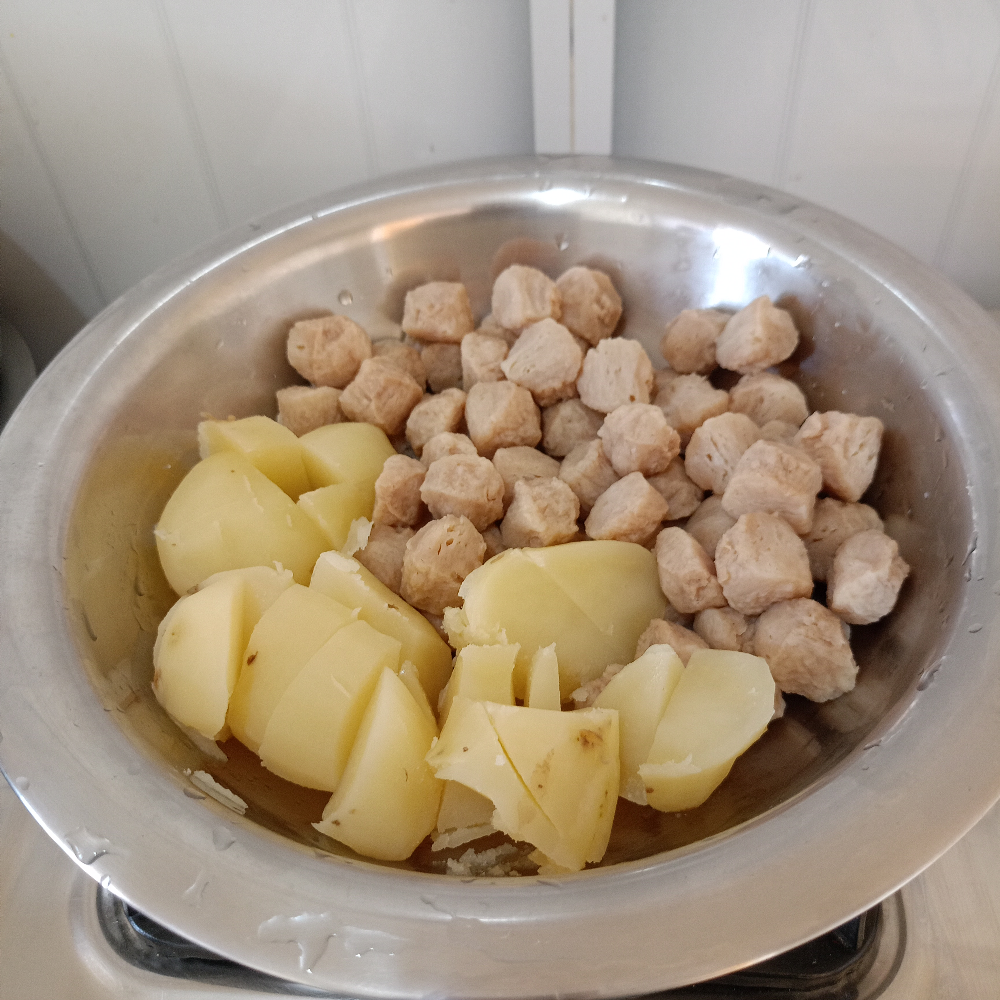
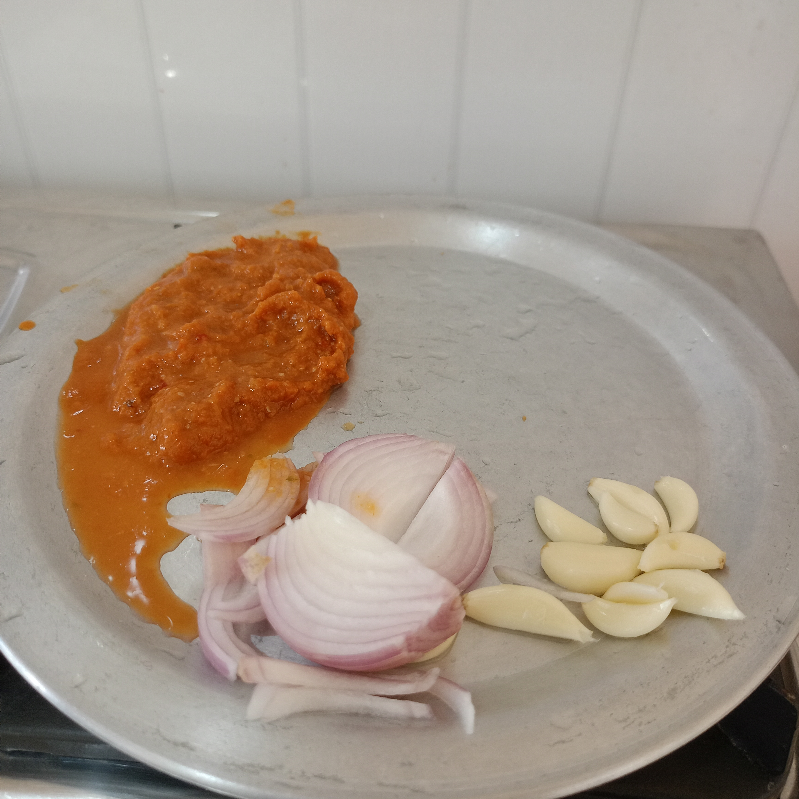

SPICELO STORY
Soya Chunk Curry with Potatoes
Enjoy homemade Soya Chunk Curry with potatoes, onions, ginger, garlic and aromatic Indian spices. This comforting curry serves two people and tastes delicious with rice or roti.

The Story Behind This Dish
Whenever I visited my aunt's home in Siliguri as a guest, she would prepare this delicious Soya Chunk Curry for me. Travelling from my village to the city always felt special, and her homemade food made those visits even more memorable.
I used to enjoy her curry with white rice or roti. The taste, the warmth of her home and the time we spent together became a lovely food memory that I still cherish.
This recipe is my way of remembering those visits to Siliguri and the comforting food my aunt lovingly made for me.
10 min
50 min
Easy
Ingredients for Soya Chunk Curry
For 2 persons
- 200 g soya chunks
- 2 medium potatoes
- 1 onion, chopped
- 1 spoon ginger paste
- 1 spoon garlic paste
- 1 spoon red chilli powder
- 2 spoons cooking oil
- 1 spoon cumin seeds (jeera)
- ½ spoon turmeric powder
- ½ spoon garam masala
- Salt to taste
- 300 ml water for the curry, plus water for boiling
Note: Spoon measurements follow the original recipe. Adjust the chilli powder and salt according to taste.
Preparing the Ingredients

Boil the soya chunks and potatoes before preparing the curry.

How to Make Soya Chunk Curry
- Boil the soya chunks: Put the soya chunks in hot water and boil for 5 minutes. Drain the water thoroughly.
- Fry the soya chunks: Fry the drained chunks in oil and keep them aside.
- Prepare the potatoes: Boil the potatoes, cut them into medium-sized pieces and keep them aside.
- Heat the oil: Heat oil in a kadai. Add cumin seeds and chopped onion.
- Cook the masala: Add salt, turmeric powder, red chilli powder, ginger paste and garlic paste. Cook on medium heat for about 10 minutes, stirring as needed.
- Add the potatoes: Add the boiled potato pieces and cook for 5 minutes.
- Prepare the gravy: Pour in 300 ml water. Cover and cook for about 15 minutes.
- Add the soya chunks: Add the fried soya chunks and cook for another 10 minutes, until the curry is heated through.
- Finish the curry: Add garam masala, mix well and turn off the heat when the potatoes and soya chunks are fully cooked.
Total time: approximately 60 minutes. The exact time may vary depending on your stove and preparation.
Tips for Delicious Soya Chunk Curry
- Drain the soya chunks well before frying.
- Cut the potatoes into similar-sized pieces for even cooking.
- Cook the onion and masala on medium heat, stirring regularly.
- Adjust the water to make the gravy thicker or thinner.
- Add salt and chilli powder according to your taste.
- Make sure the potatoes and soya chunks are fully cooked before serving.
- Serve hot with white rice or roti.
Soya Chunk Curry FAQ
How many people does this recipe serve?
This recipe is prepared for approximately two people.
What can I serve with Soya Chunk Curry?
You can serve this curry with white rice or roti.
How long does Soya Chunk Curry take to cook?
Allow approximately 60 minutes in total, including preparation and cooking.
Can I adjust the spice level?
Yes. Adjust the red chilli powder according to your preference.
My Food Note
For me, this Soya Chunk Curry is more than a homemade meal. It reminds me of visiting my aunt in Siliguri, travelling from my village to the city, and enjoying her cooking with rice or roti.
Some recipes stay in our memories because of the people and moments connected with them. This is one of those recipes.
Comments